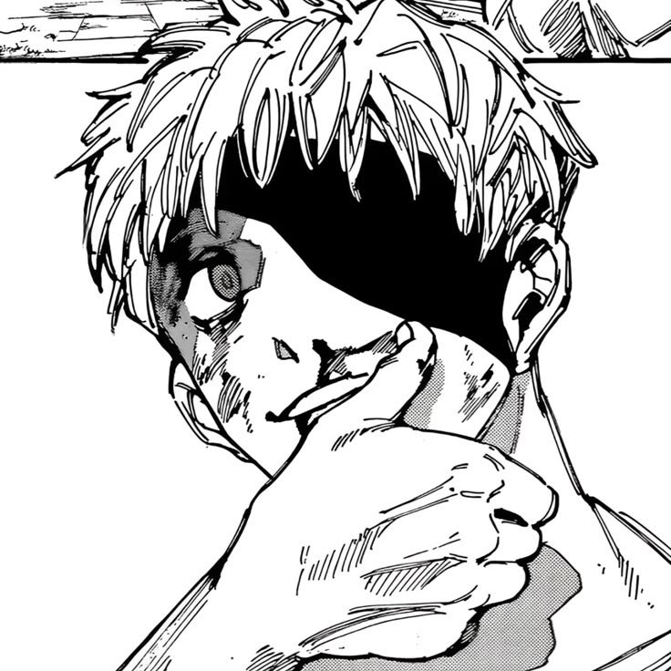
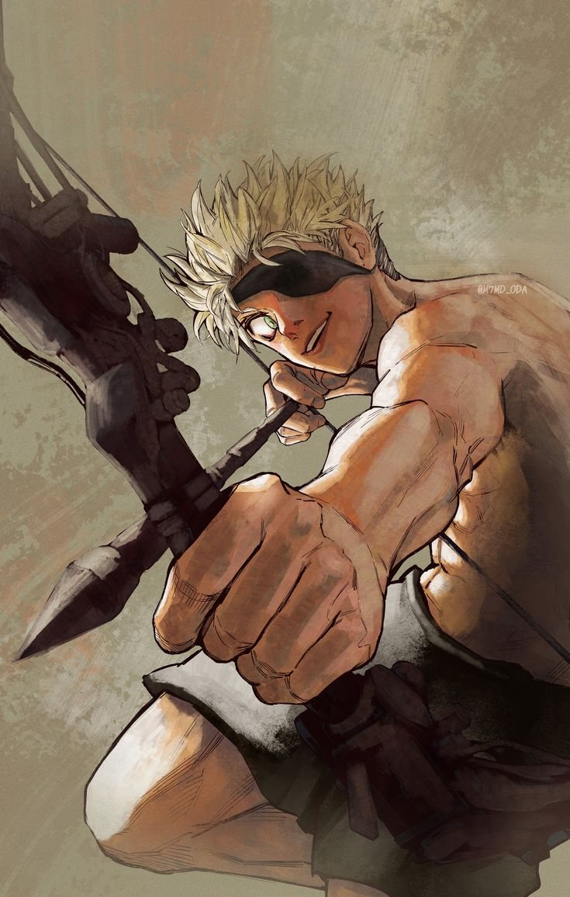
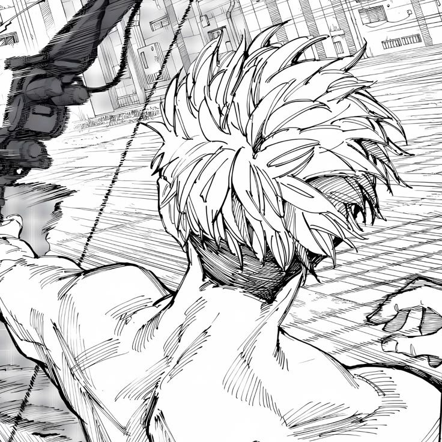
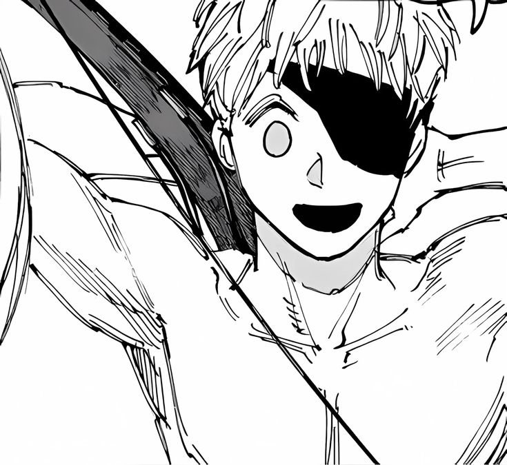
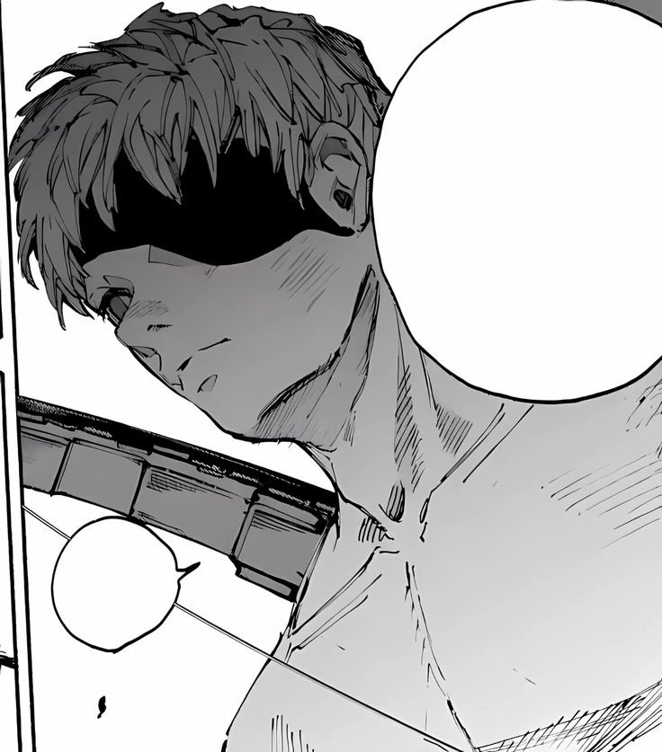
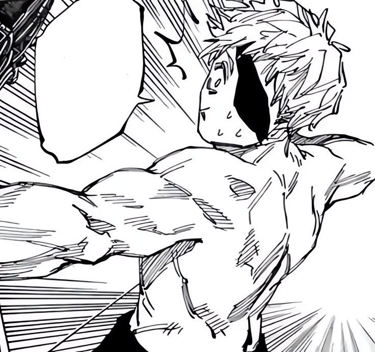

[2·1]
Avance.
KIM
Nom : ???
Les passages sont au bord des murs.
Flèches · ZQSD · clic — / pour s'adresser au Système
Rien.
Ici non plus.
Continue.
[2·2] — Identité
[1·0] — Description physique
Il peut faire des mouvements que les plus grands gymnastes ne seraient pas capable de faire et a la fâcheuse tendance de mêler ça à ses talents d'archer.
Il est hyperlaxe.
Enfin, il est aveugle d'un œil et cache l'autre « fonctionnel » par un cache-œil.
Il ne ressent
[0·2] — Description mentale
Il est vide
Il est vide et a été bâtit toute son enfance pour l'être.
L'Entraînement l'a totalement détaché de ses émotions et il se force à donner un semblant de réaction à ce qui peut lui arriver, néanmoins [ passage déplacé — plus profond ]
À noter — lorsqu'il est envoyé en mission il tuera rarement ceux qui se mettent à travers de son objectif et se contentera de les assommer, il y voit une perte de temps.
[3·0]
[4·1]
[4·2]
[?·?]
… les choses qu'il a subi semblent ne pas avoir touché l'enfant qui est en lui.
Cependant sa vision de « l'enfant » est erronée puisqu'il croit que ce statut excuse tout même les pires horreurs.
11 ans.
[3·3] — Archives
Kim — Excavateur du Dédale.
Illustration couleur : @M7MD_ODA.
Autres images : planches de manga. Droits à leurs auteurs respectifs.
—





